3 months with 3 chonky cats
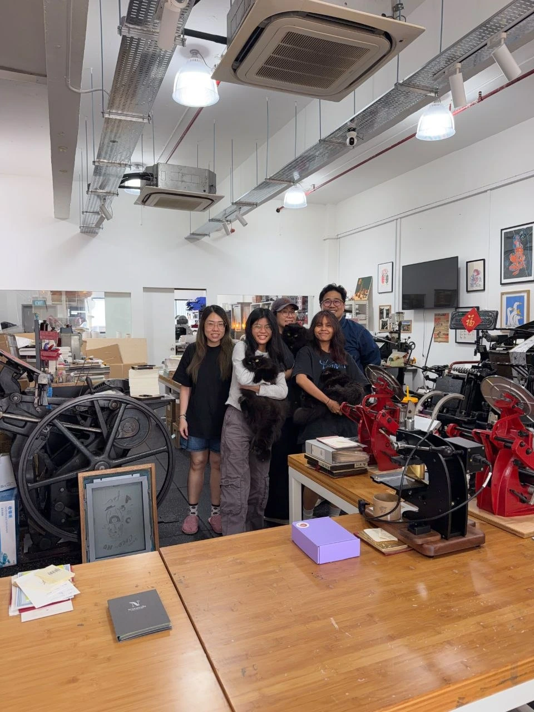
Interning at The Gentleman's Press
During the holidays, I interned at the Gentleman's Press where I got to work with a lot of lovely people, prints and of course, cats! I was surrounded by paper at all times and designed wedding stationery, business cards, cards for babies, menus and even had a go at letterpress printing, which made me grateful for the invention of the HP inkjet printer.
Printing has come so far!! Each piece took 15 minutes to print which I'm sure modern printers would already have printed 50 sheets at that point. Even so, letterpress > modern printers today haha. The vibrancy of each print was unmatched and the process of inking and cleaning the mould was an experience (although tedious) I would never forget. Aside from that, I had many lovely and talented colleagues who took care of me during the 3 month period.
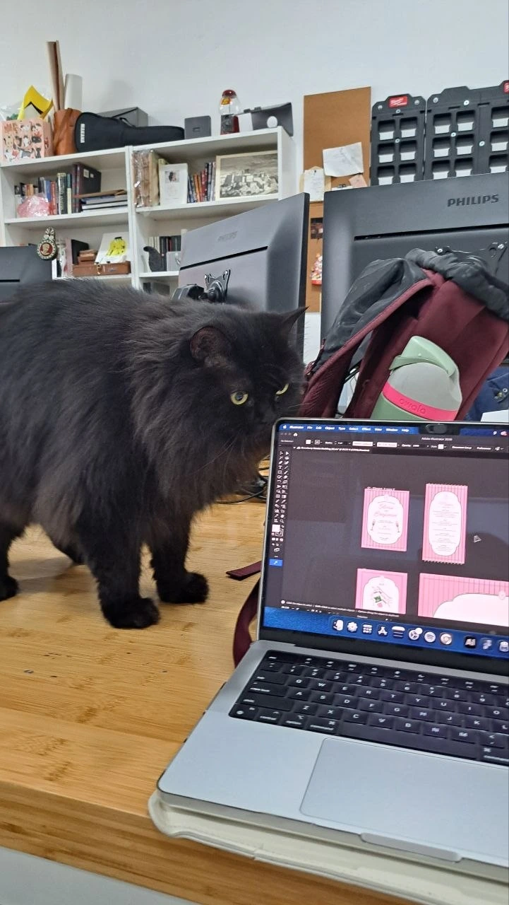
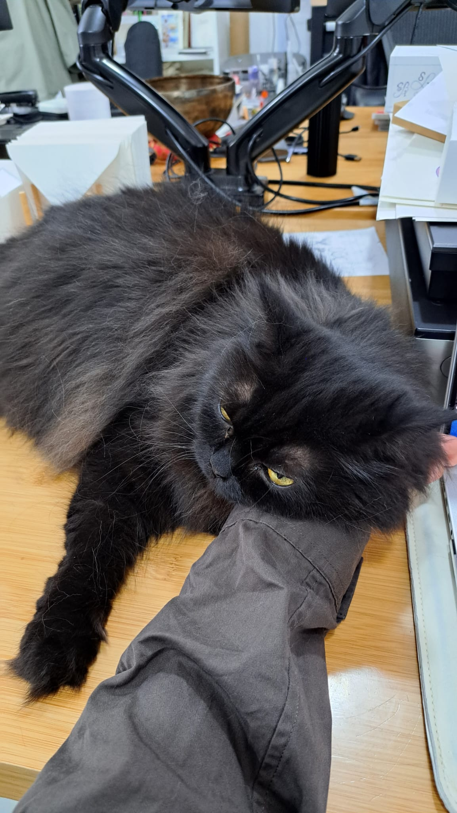
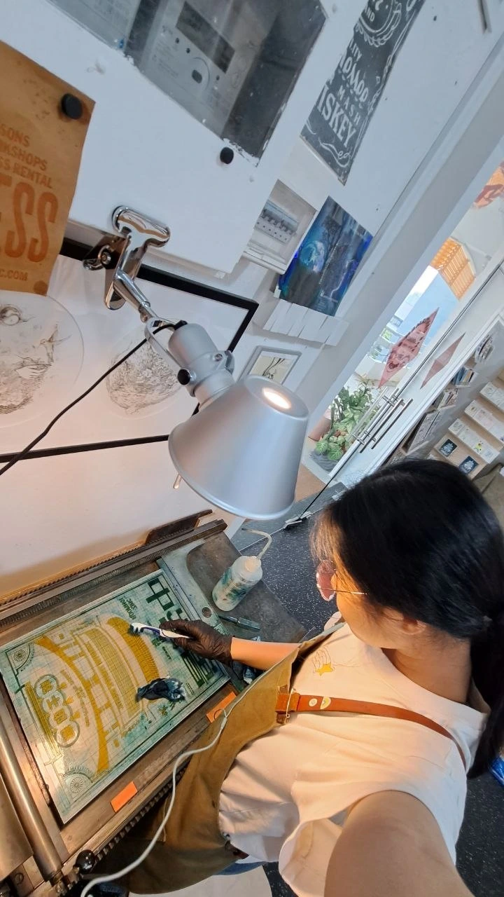
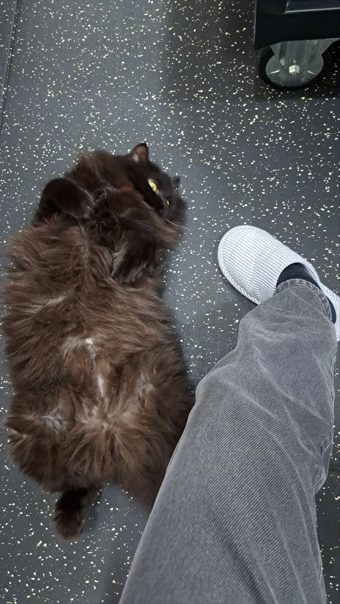
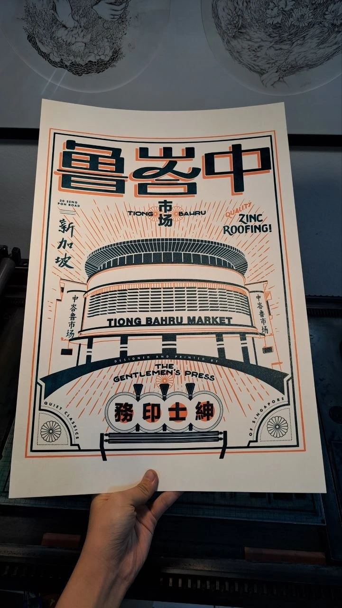
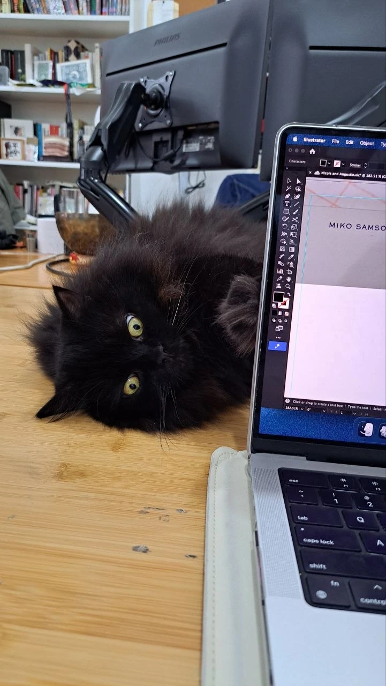
Listened to a few audiobooks at work...
Of course, FYP did not leave my brain. My body may be at office, but my soul stayed with LASALLE. Using Libby, I borrowed a few books that I felt were very timekeeping adjacent, which was my topic for Year 2's research log.
I opted for an audio reading experience as I was pretty exhausted by the time I came home from work to do any productive research... so reading while doing work felt like maximising productivity (which is ironic for someone who is attempting to escape from clock time).
Since it was the holidays, I felt that I could broaden my reading scope instead of being so strictly focused on the topic of timekeeping. This was the time to catch up. I read mostly non-fiction, historical accounts of the evolution of timekeeping, but also (1) fictional book about time. I've also attempted other time travel books but I felt that it wasn't as relevant, although equally interesting. The downside to reading via audiobooks was that my mind tended to drift away especially when the author started to explain the mathematical part of timekeeping—so that's definitely an area I won't be going into for FYP.
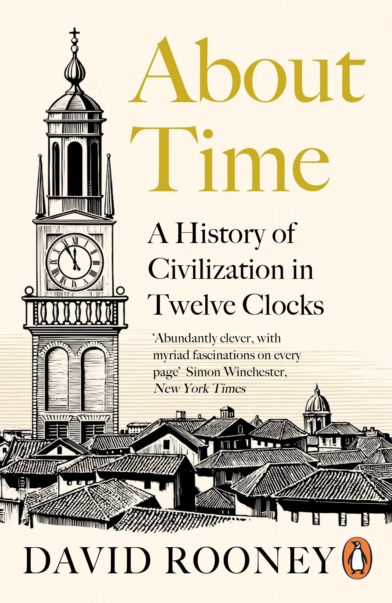
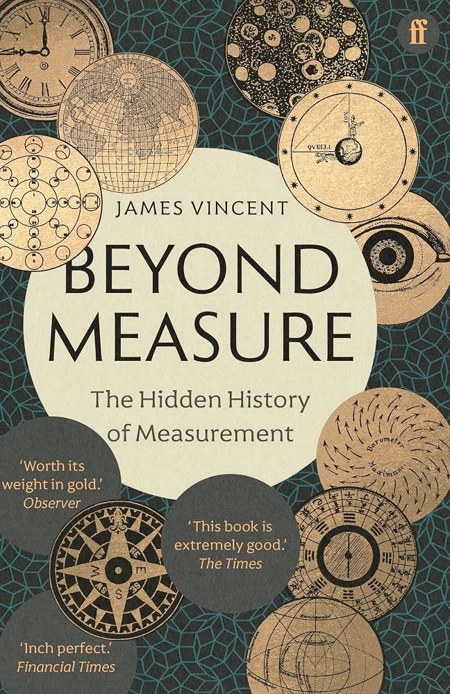
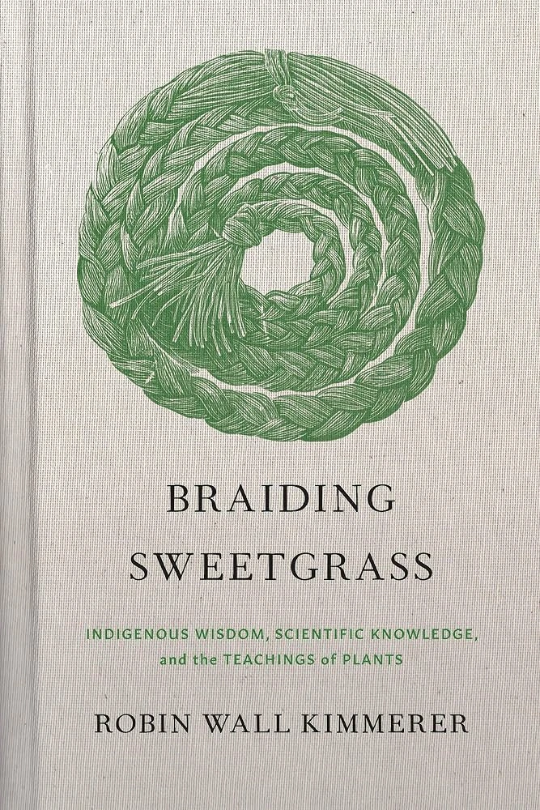
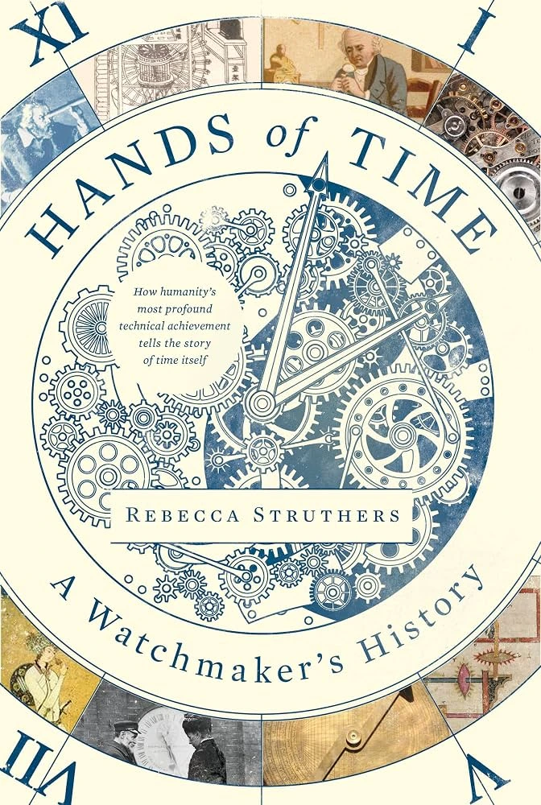
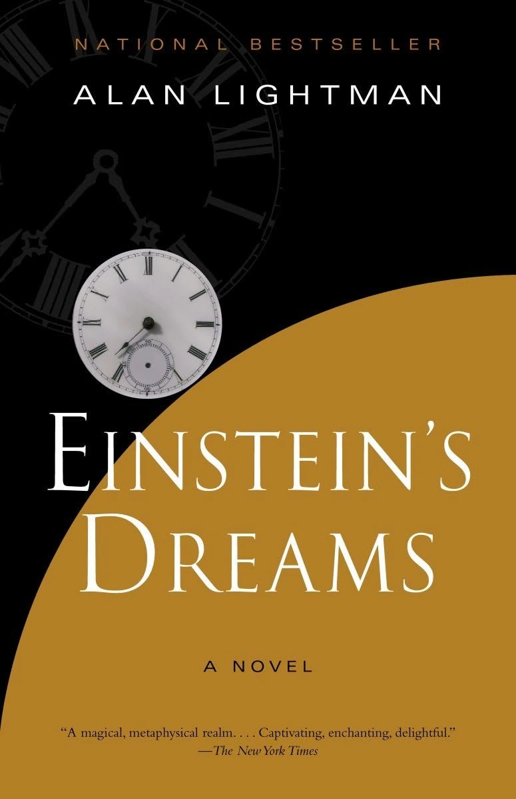
Thoughts while reading (or listening?)
and Hands of time
These books were very informative and went through a critical analysis of the role that clocks and other timekeeping devices played in our lives. I liked that there was also some coverage of Asian timekeeping e.g. through the story of the world's largest sundial in India, the Jantar Mantar in Jaipur. In this aspect, I felt that Rooney's book was more useful to me, as he organises his chapters by different significant timekeeping instruments and analyses its impact on the civilisation that invented it. I also never got around to finishing Struther's book, but I did feel it was a more western-centric account. These books left me wondering more about cur
A really interesting compilation of readings. Each chapter was a date which I assume is the fictional date of when Einstein dreamt up each theory. Basically, this book was about Einstein's various theories on time, which he would share with his friend (real) Besso. Each dream was as mind-provoking as the last. One story that really got me was what if everyone only lives a day? Everyone only sees one sunset or sunrise. Another one was if time was a circle, but nobody is able to perceive this experience. It just bends over and over again without us knowing. Although fictional, I felt that this book illustrated how life experience is shaped by the concepts of time that we choose to believe in.
I was pleasantly surprised that Beyond Measurement covered a little bit about time (actually a lot). In fact, time is a big part of measurement as its used as the "constant variable" in many scientific experiments. Vincent talks about the pursuit of accuracy and standardisation in the earlier parts of human history, and how thats used to enforce power and control over others.
Kimmerer's Braiding Sweetgrass was also not as relevant, but I enjoyed listening to the anecdotes that she shares about indigenous knowledge. I was very moved by some of the stories, especially about her trying to learn her indigenous language, as most knowledge of it was destroyed by colonialism or forgotten. It made me reflect on how I've almost forgotten how to speak the dialect that my grandparents speak (Hakka and Cantonese)—even Mandarin is a struggle on most days. Maybe I should be focusing on Cantonese or Hakka for my final year project...
"Time presents a series of paradoxes which Lightman presents as if they were dreams to be analysed - not to be resolved but merely to be appreciated."
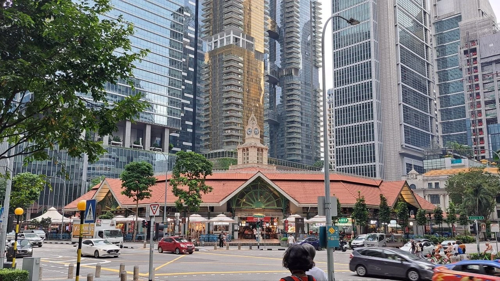
Time in objects
I wasn't actively looking for clocktowers in Singapore or any time-related object, but there were definitely some interesting time-related structures, like the Lau Pa Sat clocktower. I think that it casts a nice juxtaposition, with its somewhat vintage self sitting in the midst of towering skyscrapers, almost like a moment frozen in time.
I lived vicariously through my cousin who went on Europe for her exchange. She recounted her experiences in various countries in Europe, and shared with me about the clocktowers that she encountered. I remember that I finished reading About Time by then, so this was a nice visualisation of all the structures that I read about.
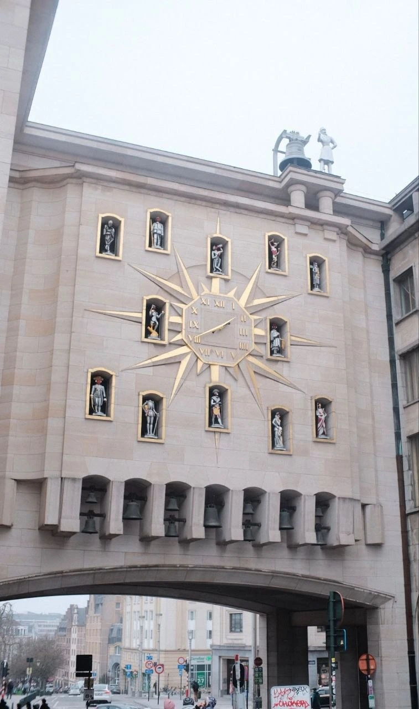
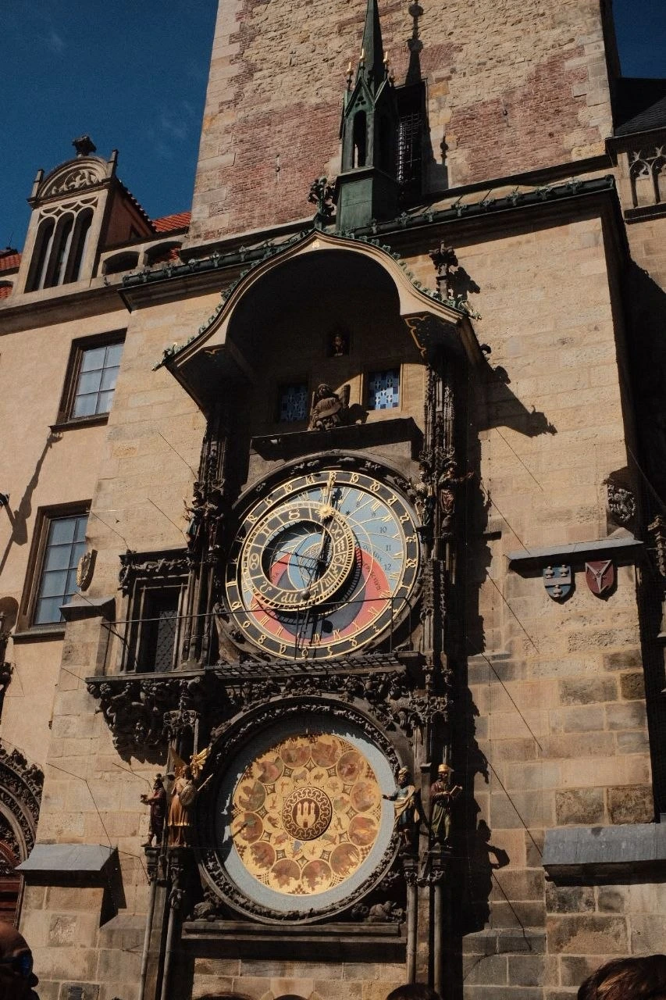
The holidays passed by in a blur... I felt it was more hectic and fast-paced than the other holiday periods I've had, but at the same time, I liked that I kept busy! Hopefully I will be prepared for what's to come. Honestly, a little sad that my student life is coming to an end, but time waits for no man.